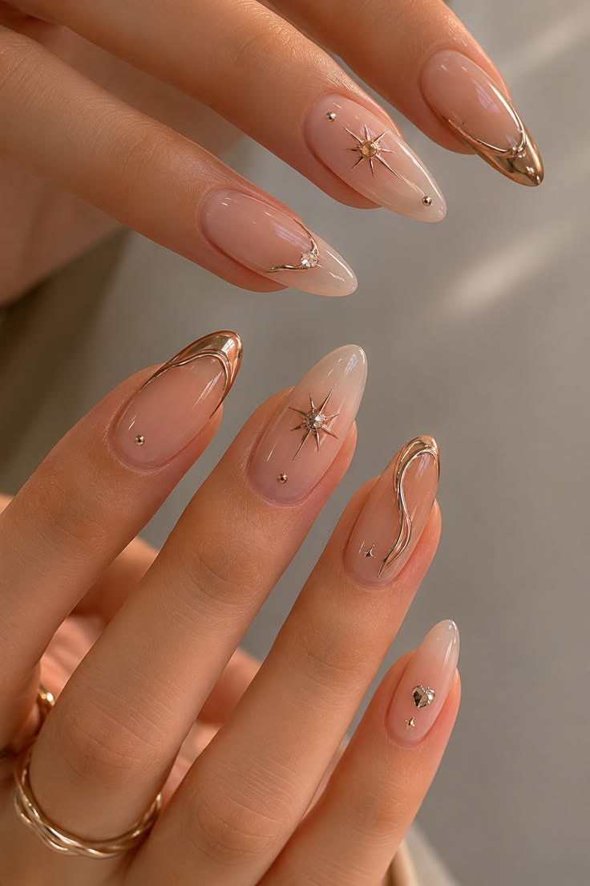
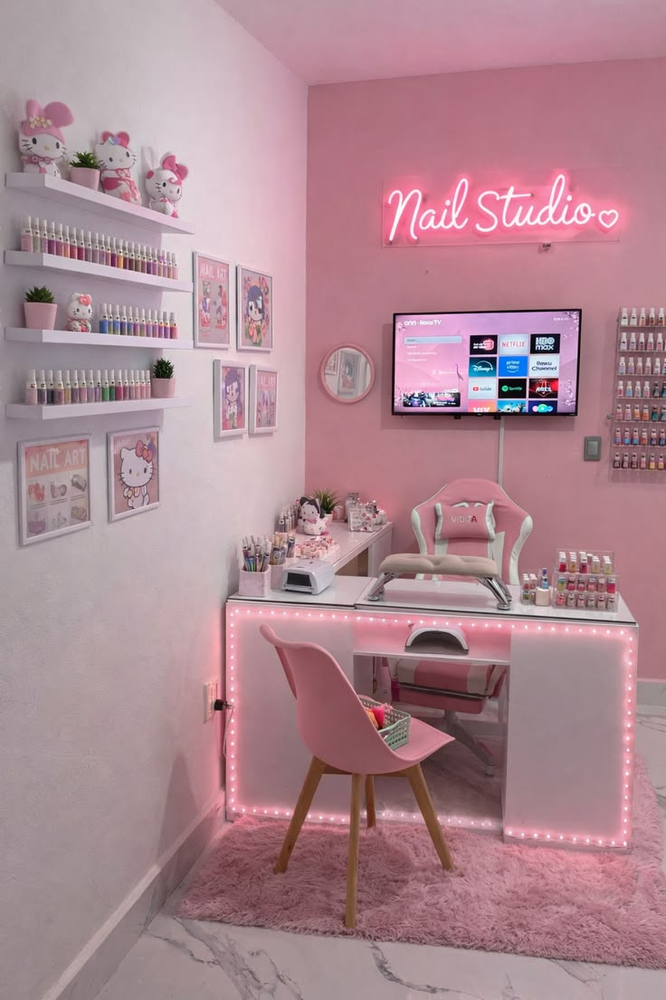

İSTANBUL · BEAUTY & ART STUDIO
Işıltını
bakışlarında ve tırnaklarında taşı.
Sana özel tasarlanan, en trend tekniklerle uygulanan ve her bakışta iyi hissettiren kusursuz dokunuşlar.

for you ✦

LUNA’YA HOŞ GELDİN
Güzellik, detaylarda
başlar.
Her tırnak ve her bakış, senin stilinin küçük bir yansıması. Luna’da favori renginden en cesur kaş ve kirpik tasarımlarına kadar, tamamen sana özel hissettiren bir görünüm yaratıyoruz.
Kaş & Kirpik
Lifting, laminasyon ve profesyonel kaş tasarımı ile anlam kazanan bakışlar.
Tasarımları Gör ✦Nail Art
Kalıcı oje, jel tırnak ve tarzını yansıtan benzersiz el yapımı çizimler.
Tasarımları Gör ✦STÜDYO GÜNLÜĞÜ
Nail Art Tasarımlarımız
FİYAT LİSTESİ
Bakımın için
ayrılan zaman.
Fiyatlar tasarımın yoğunluğuna ve tırnak uzunluğuna göre değişebilir. Net bilgi için WhatsApp’tan yazabilirsin.
Randevu talebi oluştur ↗* Çıkarma işlemi ve özel taş/aksesuarlar ayrıca değerlendirilir.
SANA BİR YER AYIRALIM
Güzellik randevun
bir mesaj uzağında.
Formu doldur; bilgilerinin hazır olduğu WhatsApp mesajını tek dokunuşla gönder.
MERAK ETTİKLERİN
Sık sorulan
sorular.
Randevu ne zaman kesinleşir?+
WhatsApp üzerinden uygunluk dönüşü yapıldıktan sonra randevun kesinleşir.
Kirpik lifting ve kaş laminasyonu ne kadar kalıcı?+
Kullanıma ve kıl yapısına bağlı olarak ortalama 6-8 hafta boyunca formunu korur.
İşlemler ortalama ne kadar sürüyor?+
Nail art işlemleri 60-150 dakika sürerken; kirpik lifting ve kaş tasarımı yaklaşık 45-60 dakika sürmektedir.
Kendi tasarım fotoğrafımı getirebilir miyim?+
Tabii ki! İlham fotoğraflarını randevu formundaki not alanına ekleyebilirsin.